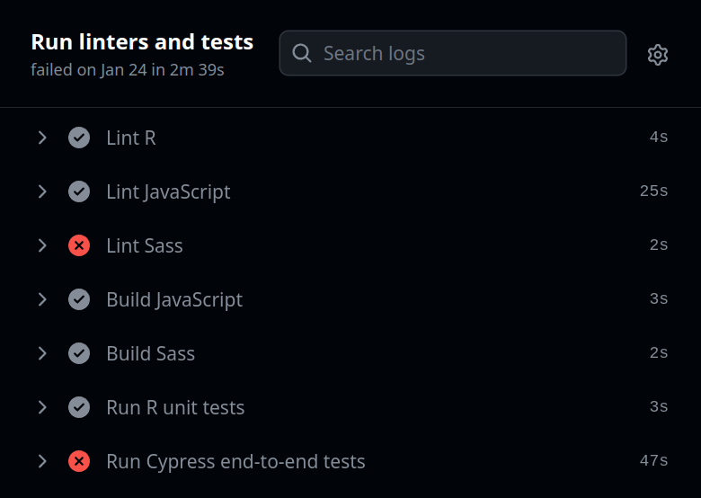

Attaching package: 'dplyr'The following objects are masked from 'package:stats':
filter, lagThe following objects are masked from 'package:base':
intersect, setdiff, setequal, unionKamil Żyła
Ege Can Taşlıçukur
APPSILON
March 1, 2024
The importance of reliable and accurate software in the pharmaceutical industry cannot be overstated. As you grapple with the complexities of developing Shiny applications that not only meet requirements but also remain free of defects, the conversation inevitably turns to the topic of validation. This is where the Rhino framework comes into play. It provides a validation environment through a set of tools that not only ensure the thorough testing of your Shiny Application but also enforce good software practices for producing quality code.
At its core, validation is about generating objective evidence that the software consistently fulfills the users’ needs and requirements. It is closely intertwined with concepts such as verification, testing, quality assurance, and quality control. However, it is not a one-time activity. Validation is an ongoing aspect of the entire development process for assessing whether an application meets requirements and is free of defects. (phuse, 2021)
The foundational aspect of validation lies in the clarity and precision of the requirements set upfront. Projects often encounter challenges not due to technical constraints but unclear requirements. This clear definition of needs is the first and most critical step in the validation process, setting the stage for effective and meaningful software evaluation.
Testing in some form is indispensable in any software engineering project. However, writing automated tests costs time and effort. Therefore, the approach to testing can vary widely depending on the project’s scope, complexity, and purpose.
For instance, manual testing, which involves checking the software by hand for bugs or other issues, might suffice for a Proof of Concept (PoC) application. On the other hand, in applications performing critical functions, such as those involved in clinical trial data analysis, the cost of failure could be extremely high, necessitating more rigorous and comprehensive automated testing.
The key is to strike a balance, ensuring the software is thoroughly validated without exhausting resources.
Rhino automates the steps for creating the validation environment so you can spend your time and effort on writing the actual tests.

When you first run rhino::init() inside your project’s root directory, Rhino introduces a suite of tools that will help you validate your Shiny application and a robust file structure to modularize your code into meaningful parts. With Rhino initialized, validating your Shiny application becomes an integral and seamless part of your development workflow.
Rhino comes with testthat installed and introduces the tests/ directory in your project. As part of the validation process, you want to test your requirements. With Rhino, all you need to do is create your test-*.R files in tests/testthat directory and run rhino::test_r().
Although shinytest2 tests can also be added with minimal effort (How to use shinytest2), one of the distinct features of Rhino is the ability to write end-to-end tests with Cypress out of the box. To learn more about how to write Cypress tests via Rhino, you can read more on Write end-to-end tests with Cypress tutorial in the documentation.
As discussed in the “What is validation?” section, validation is a continuous process. To accomplish this, Rhino uses a GitHub Actions workflow. This file enables the automatic running of tests and linting checks every time the code is pushed to the Github repository.
You can further configure your repository to require these checks to pass before a pull request can be merged, ensuring only validated code makes it into your project.
Rhino also provides tools for good software development practices. These standardization tools don’t directly address requirements or defects, but they raise the overall code quality.
Rhino provides linters for R (rhino::lint_r), Javascript (rhino::lint_js), and Sass (rhino::lint_sass) code. These linters ensure that the code style is consistent. This consistency might not be visible to the end-users, but it significantly enhances code readability and maintainability, which are crucial for reducing bugs and errors in the application. The cleaner and more readable the code, the easier it is for you to spot and rectify issues.
boxModularization allows developers to compartmentalize different aspects of the application, making each part easier to understand, develop, and validate individually.
Rhino leverages the box package for effective modularization. This approach to structuring the app makes the codebase more manageable and navigable and significantly enhances the ease of testing and maintenance.
renvrenv is currently the best tool for ensuring reproducibility and consistency across different development environments. Each Rhino project comes with renv activated. It further automatizes managing dependencies with rhino::pkg_install() and rhino::pkg_remove() functions to install, update or remove a package with just one call. Check out this explanation on Renv configuration to learn more!
A minimal Shiny app can be as simple as a single file. This ‘bare bones’ approach is the most straightforward, requiring minimal setup. However, it places the workload on the developer to establish everything from scratch.
This method may be suitable for quick prototypes or small-scale projects but it lacks the robustness needed for complex, large-scale applications, especially in a field as critical as pharmaceuticals.
Frameworks like Golem and Leprechaun adopt R package structure for Shiny apps. This method allows developers to leverage standard R package testing tools like R CMD check.
While this approach brings the benefits of R’s package development ecosystem, it does not offer extra state-of-the-art tools such as linters, Cypress tests, and GitHub Actions that Rhino provides out of the box. Leaving the burden of manually setting them up on the developers.
Read our {rhino} vs {golem} vs {leprechaun}: Which R/Shiny Library is Right for You? blog post to learn more about the differences.
Test coverage is often cited as a key metric for assessing the reliability of an application. While high test coverage is beneficial, it is not a definitive guarantee of software quality. The quality of the tests themselves matters significantly more. A common pitfall is the overreliance on achieving 100% test coverage, which may give a false sense of security about the application’s robustness.
Additionally, R CMD checks provide reassurance with their green check marks. However, many of these automated validations are not directly applicable or relevant to Shiny apps. This is one of the reasons why Rhino does not use these checks. While they are useful, they do not encompass the full spectrum of what needs to be tested in a Shiny application.
The key takeaway is that no automated check can substitute for a thorough and well-thought-out development process. The quality of a Shiny application hinges not just on the tests it passes but on the entirety of its development lifecycle, from initial design to final deployment.
Rhino adopts a software engineering perspective, focusing primarily on the technical facets of validation. It provides a comprehensive suite of tools that streamline the process of creating Shiny applications that are not only functionally sound but also robust and maintainable.
However, it’s crucial to recognize that Rhino’s contribution is a piece of a much larger puzzle. Validation, as emphasized throughout this post, is not a standalone activity but a continuous process that intertwines with every phase of software development.
From the initial requirement gathering to the final deployment, each step plays a vital role in shaping the overall quality and effectiveness of the application.
If you’d like to learn more about Rhino, especially within the context of building Shiny apps for regulatory submissions you can check out this blogpost, Reproducible and Reliable Shiny Apps for Regulatory Submissions or visit Appsilon’s website.
phuse. (2021). R Package Validation Framework. R Package Validation Framework. https://phuse.s3.eu-central-1.amazonaws.com/Deliverables/Data+Visualisation+%26+Open+Source+Technology/WP059.pdf
Attaching package: 'dplyr'The following objects are masked from 'package:stats':
filter, lagThe following objects are masked from 'package:base':
intersect, setdiff, setequal, union2024-05-15 11:22:37.864638
@online{żyła2024,
author = {Żyła, Kamil and Can Taşlıçukur, Ege and , APPSILON},
title = {Rhino: {A} {Step} {Forward} in {Validating} {Shiny} {Apps}},
date = {2024-03-01},
url = {https://pharmaverse.github.io/blog/posts/2024-03-01_rhino_shiny_app_validation/rhino_shiny_app_validation.html},
langid = {en}
}